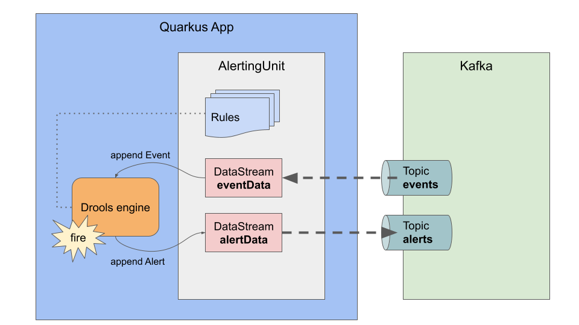

Drools Reactive Messaging processing
The latest Drools 8.31.0.Final comes with a Reactive Messaging example, which demonstrates reactively consuming messages from a Kafka topic, firing rules and then sending result messages to another Kafka topic. You can find it in https://github.com/kiegroup/drools/tree/main/drools-drl-quarkus-extension/drools-drl-quarkus-examples/drools-drl-quarkus-examples-reactive. This blog post explains how it works.
How To Run the Example
Clone drools repository
$ git clone https://github.com/kiegroup/drools.git
Go to the example directory
$ cd drools-drl-quarkus-extension/drools-drl-quarkus-examples/drools-drl-quarkus-examples-reactive/
docker-compose.yml is provided for a quick test with Kafka and Kafdrop.
$ docker-compose up -d
Build and start the application with dev mode.
$ mvn clean compile quarkus:dev
Open another terminal and send a message to a Kafka topic events
$ echo '{"type":"temperature","value":35}' | kafka-console-producer.sh --broker-list localhost:9092 --topic events
You will see STDOUT log in the terminal where the application is running. It means the message is consumed and the rule is fired.
rule IncomingEvent fired : Event [type=temperature, value=35]
If you access Kafdrop http://localhost:9000 with a browser, which is already started by docker-compose, you will find alerts topic. You can confirm the result message sent by the rule.
{"severity":"warning","message":"Event [type=temperature, value=35]"}
To shutdown the app, press Ctrl+C on the terminal.
To shutdown Kafka and Kafdrop,
$ docker-compose down
How it works
Here is the diagram of this example architecture.

The important part is how to connect Drools DataSources with Kafka topics. Thanks to Quarkus’ reactive messaging support, we can achieve it with a very small amount of codes.
In order to get reactive messaging support with Kafka, you just need to have a dependency quarkus-smallrye-reactive-messaging-kafka.
<dependency>
<groupId>io.quarkus</groupId>
<artifactId>quarkus-smallrye-reactive-messaging-kafka</artifactId>
</dependency>
Take a look at Adaptor class.
@Startup
@ApplicationScoped
public class Adaptor {
@Inject
RuleUnit<AlertingUnit> ruleUnit;
AlertingUnit alertingUnit;
RuleUnitInstance<AlertingUnit> ruleUnitInstance;
@Inject
@Channel("alerts")
Emitter<Alert> emitter;
@PostConstruct
void init() {
this.alertingUnit = new AlertingUnit();
this.ruleUnitInstance = ruleUnit.createInstance(alertingUnit);
alertingUnit.getAlertData().subscribe(DataObserver.of(emitter::send));
}
@Incoming("events")
public void receive(Event event) throws InterruptedException {
alertingUnit.getEventData().append(event);
ruleUnitInstance.fire();
}
}
With @Incoming("events"), you can receive Event object from Kafka topic events. This association is configured in application.properties.
mp.messaging.incoming.events.connector=smallrye-kafka mp.messaging.incoming.events.topic=events mp.messaging.incoming.events.value.deserializer=org.drools.quarkus.ruleunit.examples.reactive.EventDeserializer mp.messaging.outgoing.alerts.connector=smallrye-kafka mp.messaging.outgoing.alerts.topic=alerts mp.messaging.outgoing.alerts.value.serializer=io.quarkus.kafka.client.serialization.ObjectMapperSerializer
When "IncomingEvent" rule is fired, an Alert object is appended to DataStream alertData.
rule IncomingEvent
when
$e : /eventData [ type == "temperature", value >= 30 ]
then
System.out.println("rule IncomingEvent fired : "+ $e);
Alert alert = new Alert( "warning", $e.toString() );
alertData.append( alert );
end
As you see in Adaptor.init(), the Alert object will be sent to Kafka topic alerts.
Now you can develop a rule service which consumes messages reactively in a micro service environment.
Going forward
We plan to develop Specialized DataSources to connect out-of-the-box Drools rule units with external frameworks and tools, e.g. reads/writes from a Kafka topic even without a glue code like the Adaptor class. Stay tuned!